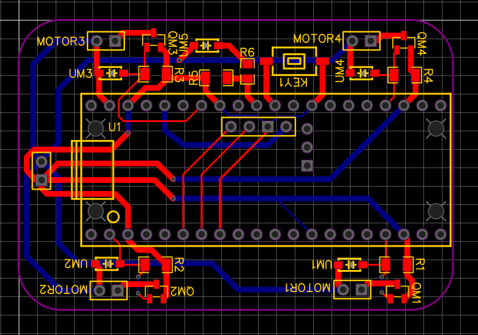
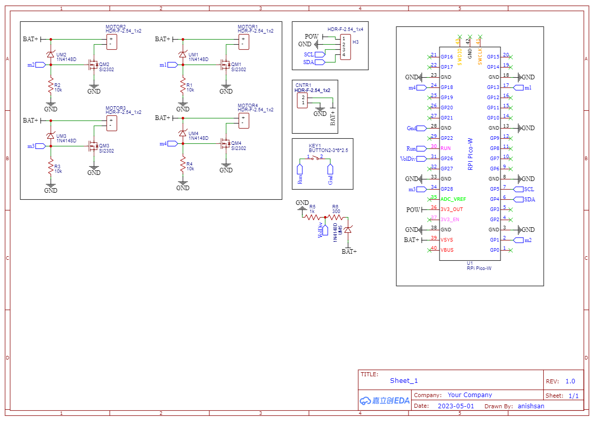

Welcome to PicoW_Copter_Docs’s documentation!
This is the Official Documentation for the PicoW Copter The PicoW Copter is an open source micro sub 60g quadcopter that is controlled using WiFi via a smartphone or computer. The PicoW Copter is designed to be a low cost, easy to build, and fun to fly quadcopter.
Hardware
The Hardware required can be found in the Hardware folder of PicoW Copter project. The Harware folders contains a BOM, PCB gerber files, and STL file for the frame. The BOM provided contains links for the parts from online indian websites but you can easily find them for other countries as well.
Bill of Materials
Taking Rs 160 for 1 PCB and Rs 160 for 3D printed frame from an online service. The total cost of the hardware is just above 2000 INR or 25 USD.
Note
Most of the hardware won’t be available in small quantities so it is adviced to anyone looking to build this project to try to build multiple of them either for yourself or a group of friends.
PCB
{kind=link}
The PCB Gerber files are given in the PCB_Gerber_PicoW_Copter folder. The PCB is a double layered, 4cm X 6cm, 1oz copper, 1.6mm PCB.
{kind=link}
Testing
Testing script are not only useful to test individual hardware components of the PicoW Copter but also a great way to learn how individual components work. This project is complex but extremely affordable allowing room for errors and mistakes even for complete beginners. Anyone looking to modify the code and hardware is more than welcome to do so.
Receiver
The PicoW Copter uses the onboard infenion WiFi chip of the raspberry Pi PicoW to communicate with a device (smartphone or computer) through UDP packets. The static IP address when using the Pi Pico over access point mode (hotspot mode) is 192.168.1.42 by default. The main motivation for using UDP is real time control of the PicoW Copter. The time taken to read packets is around 200 microseconds.
1#include <WiFi.h>
2#include <WiFiUdp.h>
3
4#ifndef APSSID
5#define APSSID "PicoW" // name of your PicoW Hotspot
6#define APPSW "password" // password of your PicoW Hotspot
7#endif
8#define UDP_PKT_MAX_SIZE 16 // number of characters in a UDP packet
9
10unsigned int localPort = 8888; // local port for UDP communication
11char packetBuffer[UDP_PKT_MAX_SIZE + 1]; // max number of characters received in one message
12int Throttle, Roll, Pitch, Yaw; // values received from each channel
13int prev;
14
15WiFiUDP Udp; // Object for WIFI UDP class
16
17void setup() {
18 Serial.begin(115200);
19 WiFi.mode(WIFI_AP); // Access Point mode
20 WiFi.begin(APSSID, APPSW); // By default static IP for PicoW will be 192.168.42.1
21 while(WiFi.status() != WL_CONNECTED) {
22 Serial.print('.'); // waiting for connection
23 delay(500); // 0.5 sec delay
24 }
25 Serial.print("\nConnected! IP address: ");
26 Serial.println(WiFi.localIP()); // The IP Address is 192.168.42.1
27 Serial.printf("UDP server on port %d\n", localPort); // Port is 8888
28 Udp.begin(localPort); // start listening on port 8888
29}
30
31void loop() {
32 // if there is data available to read then read a packet
33 int packetSize = Udp.parsePacket();
34 if(packetSize) { // if packet size is > 0
35 prev = micros();
36 int n = Udp.read(packetBuffer, UDP_PKT_MAX_SIZE); // read the data from UDP packet into packetBuffer
37 packetBuffer[n] = '\0'; // character for end of string
38 char ch1[5], ch2[5], ch3[5], ch4[5]; //
39 ch1[4] = '\0'; ch2[4] = '\0'; ch3[4] = '\0'; ch4[4] = '\0';
40 for(int i=0; i<4; i++) {
41 // Spliting the packets into four values of 4 characters each
42 ch1[i] = packetBuffer[i];
43 ch2[i] = packetBuffer[i+4];
44 ch3[i] = packetBuffer[i+8];
45 ch4[i] = packetBuffer[i+12];
46 }
47 // converting string/character arrays to integer
48 Yaw = atoi(ch1);
49 Throttle = atoi(ch2);
50 Roll = atoi(ch3);
51 Pitch = atoi(ch4);
52 Serial.printf("Yaw = %d, Throttle = %d, Roll = %d, Pitch = %d\n", Yaw, Throttle, Roll, Pitch);
53 Serial.printf("Time taken = %d\n", micros() - prev);
54 }
55}
The UDP packets are sent by an APP or software (in our case this python code) on the device to the PicoW’s IP address and port number provided in the Receiver.ino file.
1import socket
2import time
3
4UDP_IP = "192.168.1.42"
5UDP_PORT = 8888
6MESSAGE = "1000100110021003" # sending four 4 digit long numbers
7
8# creating a UDP socket (UDP is connection less)
9server = socket.socket(socket.AF_INET, socket.SOCK_DGRAM)
10while True:
11 server.sendto(MESSAGE.encode('utf-8'), (UDP_IP, UDP_PORT))
12 # sleep for 1 second
13 time.sleep(1)
Gyro
The MPU6050 is a 6 axis gyroscope and accelerometer sensor. It is used to measure the orientation of the PicoW Copter. The MPU6050 is connected to the Pi PicoW using I2C protocol communicatin at a frequency of 400kHz. The I2C address of the MPU6050 is 0x68. All i2c register addresses can be found in the MPU6050 manual by invensense. Joop Brokking has a great tutorial on how to use the MPU6050 with Arduino. The time taken to read IMU data is around 400 microseconds.
1#include<Wire.h>
2
3#define I2C_CLK_FREQ 400000 // 400kHz
4const u_int8_t IMUAddress = 0x68; // Address for MPU6050 IMU sensor
5// IMU offset
6int16_t gyroXoffset = 0;
7int16_t gyroYoffset = 0;
8int16_t gyroZoffset = 0;
9int16_t accXoffset = 0;
10int16_t accYoffset = 0;
11int16_t accZoffset = 0;
12// MPU6050 IMU
13int16_t accX, accY, accZ; // accelerometer
14int16_t tempRaw;
15int16_t gyroX, gyroY, gyroZ; // gyroscope
16float temp; // temperature
17int prev; // keeps track of time before reading IMU data
18
19void setup() {
20 pinMode(LED_BUILTIN, OUTPUT); // set the built in LED pin as Output
21 Serial.begin(115200);
22 Wire.setClock(I2C_CLK_FREQ); // setting I2C communication frequency to 400kHz
23 Wire.begin(); // starting I2C communication over SDA0 and SCL0 pins
24
25 Wire.beginTransmission(IMUAddress);
26 Wire.write(0x6B); // PWR_MGMT_1
27 Wire.write(0x00);
28 Wire.endTransmission();
29
30 Wire.beginTransmission(IMUAddress);
31 Wire.write(0x1B); // GYRO_CONFIG
32 Wire.write(0x08); // +- 1000 degrees/s
33 Wire.endTransmission();
34
35 Wire.beginTransmission(IMUAddress);
36 Wire.write(0x1C); // ACCEL_CONFIG
37 Wire.write(0x10); // +- 16g
38 Wire.endTransmission();
39
40 Wire.beginTransmission(IMUAddress);
41 Wire.write(0x1A); // CONFIG
42 Wire.write(0x03);
43 Wire.endTransmission();
44
45 // IMU offset calculation
46 int offcnt;
47 long gx=0, gy=0, gz=0, ax=0, ay=0, az=0; // variables to store sum of 1000 readings
48 for(offcnt=0; offcnt<=1000; offcnt++) {
49 // Reading IMU data 1000 times to calculate offset values of IMU
50 Wire.beginTransmission(IMUAddress);
51 Wire.write(0x3B); // GyroXhigh byte
52 Wire.endTransmission();
53 Wire.requestFrom(IMUAddress, 14); // request 14 bytes of data from IMU
54 while(Wire.available() < 14); // If we have received 14 bytes exit out of loop
55 // read IMU data values
56 accX = Wire.read()<<8|Wire.read();
57 accY = Wire.read()<<8|Wire.read();
58 accZ = Wire.read()<<8|Wire.read();
59 tempRaw = Wire.read()<<8|Wire.read();
60 gyroX = Wire.read()<<8|Wire.read();
61 gyroY = Wire.read()<<8|Wire.read();
62 gyroZ = Wire.read()<<8|Wire.read();
63 // Sum the values read from IMU
64 gx += gyroX;
65 gy += gyroY;
66 gz += gyroZ;
67 ax += accX;
68 ay += accY;
69 az += accZ;
70 delay(3); // simulating delay for rest of the quadcopter processes
71 if(offcnt%40 == 0)
72 digitalWrite(LED_BUILTIN, HIGH); // LED blinks to indicate offset calculation is going on
73 else
74 digitalWrite(LED_BUILTIN, LOW);
75 }
76 // get the average of 1000 readings
77 gyroXoffset = (int16_t)(gx/1000);
78 gyroYoffset = (int16_t)(gy/1000);
79 gyroZoffset = (int16_t)(gz/1000);
80 accXoffset = (int16_t)(ax/1000);
81 accYoffset = (int16_t)(ay/1000);
82 accZoffset = (int16_t)(az/1000);
83}
84
85void loop() {
86 prev = micros(); // record time when we started reading IMU data
87 // read IMU values
88 Wire.beginTransmission(IMUAddress);
89 Wire.write(0x3B);
90 Wire.endTransmission();
91 Wire.requestFrom(IMUAddress, 14);
92
93 while(Wire.available() < 14);
94
95 accX = Wire.read()<<8|Wire.read();
96 accY = Wire.read()<<8|Wire.read();
97 accZ = Wire.read()<<8|Wire.read();
98 tempRaw = Wire.read()<<8|Wire.read();
99 gyroX = Wire.read()<<8|Wire.read();
100 gyroY = Wire.read()<<8|Wire.read();
101 gyroZ = Wire.read()<<8|Wire.read();
102 // subtract offset from readings
103 gyroX -= gyroXoffset;
104 gyroY -= gyroYoffset;
105 gyroZ -= gyroZoffset;
106 accX -= accXoffset;
107 accY -= accYoffset;
108 accZ -= accZoffset;
109 temp = (float)tempRaw;
110 // print data
111 //Serial.printf("AccX = %d, AccY = %d, AccZ = %d, Temp = ", accX, accY, accZ);
112 //Serial.print(temp);
113 //Serial.printf(", GyroX = %d, GyroY = %d, GyroZ = %d\n", gyroX, gyroY, gyroZ);
114 Serial.printf("Time = %d\n", micros() - prev);
115 delay(250);
116}
Motors + ESCs
After you have finished soldering all components on the PCB and soldered the motors in such manner Front Right Motor -> CCW, Front Left Motor -> CW, Bottom Right Motor -> CW, Bottom Left Motor -> CCW where CW means Clock Wise and CCW means Counter Clock Wise. The way you can check the direction of rotation of each motor is by taking any AA or AAA battery and testing the motors by holding the wires of the poles of the battery. This will power the motor and you can use your finger to feel the direction of rotation. In case the motors are spining in the wrong direction you can change the direction of rotation by switching the polarity of the motor connection to the PCB. The PCB has two through-hole pad for each motor where the round pad indicates +ve terminal and square terminal indicates -ve/ground terminal. When performing this test please do not attach the propellers to the motors for safety reason. You can perform this test when powered via USB of the pi pico but it is prefered to power the PCB using the battery.
The motors are controlled by a PWM signal generated by using analog write command on digital pins. The Mosfets act as a switch to rapidly switch the voltage and current from the battery to the motors according to the PWM signal received. The direction of rotation for the motors are same as YMFC or Pixhawk/Arducopter quadcopters i.e. front right CCW, front left CW, bottom right CW and bottom left CCW. This script is not only useful to test the motors but also test the direction of rotation of the motors.
1#define MOT_TOP_LEFT 18
2#define MOT_TOP_RIGHT 13
3#define MOT_BOTTOM_LEFT 28
4#define MOT_BOTTOM_RIGHT 1
5void setup() {
6 // put your setup code here, to run once:
7 analogWriteFreq(500); // PWM frequency 500 Hz
8 analogWriteRange(1000); // value coresponding to 100% PWM duty cycle
9
10 pinMode(MOT_TOP_LEFT, OUTPUT);
11 pinMode(MOT_TOP_RIGHT, OUTPUT);
12 pinMode(MOT_BOTTOM_LEFT, OUTPUT);
13 pinMode(MOT_BOTTOM_RIGHT, OUTPUT);
14 pinMode(LED_BUILTIN, OUTPUT);
15 analogWrite(MOT_TOP_LEFT, 0);
16 analogWrite(MOT_TOP_RIGHT, 0);
17 analogWrite(MOT_BOTTOM_LEFT, 0);
18 analogWrite(MOT_BOTTOM_RIGHT, 0);
19
20 //Use the led on the Arduino for startup indication.
21 digitalWrite(LED_BUILTIN,HIGH);
22}
23
24void loop() {
25 // put your main code here, to run repeatedly:
26 for(int i=0; i<=1000; i++) {
27 analogWrite(MOT_TOP_RIGHT, i);
28 analogWrite(MOT_BOTTOM_RIGHT, i);
29 analogWrite(MOT_BOTTOM_LEFT, i);
30 analogWrite(MOT_TOP_LEFT, i);
31 delay(2);
32 }
33 for(int i=0; i<=1000; i++) {
34 analogWrite(MOT_TOP_RIGHT, 1000-i);
35 analogWrite(MOT_BOTTOM_RIGHT, 1000-i);
36 analogWrite(MOT_BOTTOM_LEFT, 1000-i);
37 analogWrite(MOT_TOP_LEFT, 1000-i);
38 delay(2);
39 }
40}
BMP280 (Not yet tested or used in flight controller)
The BMP280 is a barometric pressure and temperature sensor. It is used for the altitude hold feature of the PicoW Copter. The details for the i2c registers of the BMP280 sensor can be found in the data sheet along with the conversions. I will suggest those who are interested to refer to the video by Carbon Aeronautics. (This feature is not tested nor is included in flight controller yet but a script is provided for getting sensor data for PicoW)
1#include <Wire.h>
2#define BMPAddress 0x76
3
4// Barometer calibration values
5uint16_t dig_T1, dig_P1;
6int16_t dig_T2, dig_T3, dig_P2, dig_P3, dig_P4, dig_P5;
7int16_t dig_P6, dig_P7, dig_P8, dig_P9;
8
9// Altitude variables
10float AltitudeBarometer, AltitudeBarometerStartUp;
11int RateCalibrationNumber;
12
13// read barometer signal
14void barometer_signal() {
15 Wire.beginTransmission(BMPAddress);
16 Wire.write(0xF7);
17 Wire.endTransmission();
18 Wire.requestFrom(BMPAddress, 6);
19 uint32_t press_msb = Wire.read(); // 0xF7
20 uint32_t press_lsb = Wire.read(); // 0xF8
21 uint32_t press_xlsb = Wire.read();
22 uint32_t temp_msb = Wire.read();
23 uint32_t temp_lsb = Wire.read();
24 uint32_t temp_xlsb = Wire.read(); // 0xFC
25
26 // Construct raw temperature and pressure measurements
27 // msb contans bits [19-12], lsb contains bits [11-4], and xlsb contains bits [3-0]
28 unsigned long int adc_P = (press_msb<<12)|(press_lsb<<4)|(press_xlsb>>4);
29 unsigned long int adc_T = (temp_msb<<12)|(temp_lsb<<4)|(temp_xlsb>>4);
30
31 // Construct fine resolution temperature value
32 signed long var1, var2;
33 var1 = ((((adc_T>>3)-((signed long int)dig_T1<<1)))*((signed long int)dig_T2))>>11;
34 var2 = (((((adc_T>>4) - ((signed long int)dig_T1)) * ((adc_T>>4)-((signed long int)dig_T1)))>>12)*((signed long int)dig_T3))>>14;
35 signed long int t_fine = var1 + var2;
36
37 // Construct the compensated and calibrated pressure p according to manufacturer
38 unsigned long int p;
39 var1 = (((signed long int)t_fine)>>1) - (signed long int)64000;
40 var2 = (((var1>>2)*(var1>>2))>>11)*((signed long int)dig_P6);
41 var2 = var2 + ((var1*((signed long int)dig_P5))<<1);
42 var2 = (var2>>2)+(((signed long int)dig_P4)<<16);
43 var1 = (((dig_P3*(((var1>>2)*(var1>>2))>>13))>>3)+((((signed long int)dig_P2)*var1)>>1))>>18;
44 var1 = ((((32768+var1))*((signed long int)dig_P1))>>15);
45 if(var1 == 0) { p = 0; }
46 p = (((unsigned long int)(((signed long int)1048576)-adc_P)-(var2>>12)))*3125;
47 if(p<0x80000000) { p = (p<<1) / ((unsigned long int)var1); }
48 else { p = (p / (unsigned long int)var1) * 2; }
49 var1 = (((signed long int)dig_P9)*((signed long int)(((p>>3)*(p>>3))>>13)))>>12;
50 var2 = (((signed long int)(p>>2))*((signed long int)dig_P8))>>13;
51 p = (unsigned long int)((signed long int)p + ((var1 + var2 + dig_P7)>>4));
52
53 double pressure = (double)p/100; // pressure in hPa
54 AltitudeBarometer = 44330*(1-pow(pressure/1013.25, 1/5.255))*100; // Altitude in cm
55}
56
57void setup() {
58 // BMP280 setup
59 Serial.begin(57600);
60 pinMode(LED_BUILTIN, OUTPUT);
61 digitalWrite(LED_BUILTIN, HIGH);
62 Wire.setClock(400000);
63 Wire.begin();
64 delay(250);
65
66 // Setup BMP280 barometer optimized for indoor navigation
67 Wire.beginTransmission(BMPAddress);
68 Wire.write(0xF4); // measurement register setup for indoor mode
69 Wire.write(0x57); // normal mode, pressure oversampling x16 temperature oversampling x2
70 Wire.endTransmission();
71 // Setup configuration register
72 Wire.beginTransmission(BMPAddress);
73 Wire.write(0xF5);
74 Wire.write(0x14); // IIR filter coefficient 16 rest are 0
75 Wire.endTransmission();
76 // Importing 12 trimming parameters from sensor
77 uint8_t data[24], i = 0;
78 // First trimming parameter
79 Wire.beginTransmission(BMPAddress);
80 Wire.write(0x88);
81 Wire.endTransmission();
82 Wire.requestFrom(BMPAddress, 24); // 24 bytes of data from register 0x88 to 0x9F
83 while(Wire.available()) {
84 data[i] = Wire.read();
85 i++;
86 }
87 dig_T1 = (data[1]<<8) | data[0];
88 dig_T2 = (data[3]<<8) | data[2];
89 dig_T3 = (data[5]<<8) | data[4];
90 dig_P1 = (data[7]<<8) | data[6];
91 dig_P2 = (data[9]<<8) | data[8];
92 dig_P3 = (data[11]<<8) | data[10];
93 dig_P4 = (data[13]<<8) | data[12];
94 dig_P5 = (data[15]<<8) | data[14];
95 dig_P6 = (data[17]<<8) | data[16];
96 dig_P7 = (data[19]<<8) | data[18];
97 dig_P8 = (data[21]<<8) | data[20];
98 dig_P9 = (data[23]<<8) | data[22];
99 delay(250);
100 // barometer calibration calculating altitude reference level
101 for(RateCalibrationNumber = 0; RateCalibrationNumber<2000; RateCalibrationNumber++) {
102 barometer_signal();
103 AltitudeBarometerStartUp += AltitudeBarometer;
104 delay(1);
105 }
106 AltitudeBarometerStartUp/=2000;
107}
108
109void loop() {
110 // Read the barometer and print altitudes
111 barometer_signal();
112 AltitudeBarometer = AltitudeBarometerStartUp;
113 Serial.print("Altitude [cm]:");
114 Serial.println(AltitudeBarometer);
115 delay(50);
116}
Battery voltage
While flying any quadcopter it is important to keep track of the battery voltage. The battery is a 1S Lipo 360mAh Battery and it is important to be careful when using Lipo batteries in any project as special care needs to be taken to prevent over discharge (while flying) and over charge (while charging). If you Lipo looks swollen it is recommended to dispose it in a controlled manner as provided by the manufacturer i.e. first using a large resistance to slowly discharge the Lipo completely and slowly and then burrying it. It is highly prefered to dispose Lithium batteries through some professional recycling service as They are can have long term environmental impacts as according to this article ((Go to Pg 4 last para))[https://www.intertek.com/uploadedFiles/Intertek/Divisions/Commercial_and_Electrical/Media/PDF/Battery/Environmental-Considerations-for-Lithium-Batteries-White-Paper.pdf] LION do have some heavy metals like Cobalt, Copper and Nickle so I assume Lipo batteries also have these metals and if burried they can reach into the ground water to cause heavy metal poisoning but I am not an expert on this topic so I request anyone interested to do their own research.
This script reads the battery voltage from the A0 pin and sends the reading over WiFi using UDP to another device.
Software
The main software contains the flight controller. The flight controller is the complete quadcopter code. This code was tested on 21-05-2023. once you upload the code dsiconnect the pico and keep it in a spacious room on a flat surface. Now plug in the Lipo battery to start the gyro clibration process as shown by fast blinking LED. Once the LED starts blinking on your smartphone connect to the PicoW hotspot using the password “password”. Now that you have connected the blinking must have stopped. To setup the controls go to the UDP joystick App and enter the IP address 192.168.42.1, port 8888 and rate of 20ms. Once done tap the button such that it says “ON” to indicate that the App has started and switch to the screen with joysticks. Now the way you start/ARM the quadcopter is by pulling the throttle joystick (left one) down to zero, moving it to the bottom left corner and back to the bottom center. The way you stop/DISARM the quadcopter is by bringing the throttle joystick to the bottom right anf back to center. This code is inspired from YMFC-AL project by Joop Brokking. For more details on PID controller please do refer to his playlist over on YouTube.
1#include <Wire.h> //Include the Wire.h library so we can communicate with the gyro.
2#include <WiFi.h>
3#include <WiFiUdp.h>
4
5#define I2C_CLK_FREQ 400000 // 400kHz
6const u_int8_t IMUAddress = 0x68; // Address for MPU6050 IMU sensor
7
8#ifndef APSSID
9#define APSSID "PicoW"
10#define APPSW "password"
11#endif
12#define UDP_PKT_MAX_SIZE 16
13
14unsigned int localPort = 8888;
15char packetBuffer[UDP_PKT_MAX_SIZE + 1];
16
17WiFiUDP Udp; // Object for WiFi UDP class
18
19#define MOT_TOP_LEFT 18
20#define MOT_TOP_RIGHT 13
21#define MOT_BOTTOM_LEFT 28
22#define MOT_BOTTOM_RIGHT 1
23
24///////////////////////////////////////////////////////////////////////////////////////////////////////////////////////////////////////
25//PID gain and limit settings
26///////////////////////////////////////////////////////////////////////////////////////////////////////////////////////////////////////
27float pid_p_gain_roll = 2.05; //Gain setting for the roll P-controller
28float pid_i_gain_roll = 0.013; //Gain setting for the roll I-controller 0.04
29float pid_d_gain_roll = 11.0; //Gain setting for the roll D-controller
30int pid_max_roll = 300; //Maximum output of the PID-controller (+/-)
31
32float pid_p_gain_pitch = pid_p_gain_roll; //Gain setting for the pitch P-controller.
33float pid_i_gain_pitch = pid_i_gain_roll; //Gain setting for the pitch I-controller.
34float pid_d_gain_pitch = pid_d_gain_roll; //Gain setting for the pitch D-controller.
35int pid_max_pitch = pid_max_roll; //Maximum output of the PID-controller (+/-)
36
37float pid_p_gain_yaw = 8.5; //Gain setting for the pitch P-controller. //4.0
38float pid_i_gain_yaw = 0.005; //Gain setting for the pitch I-controller. //0.02
39float pid_d_gain_yaw = 0.0; //Gain setting for the pitch D-controller.
40int pid_max_yaw = 300; //Maximum output of the PID-controller (+/-)
41
42boolean auto_level = true; //Auto level on (true) or off (false)
43
44///////////////////////////////////////////////////////////////////////////////////////////////////////////////////////////////////////
45//Declaring global variables
46///////////////////////////////////////////////////////////////////////////////////////////////////////////////////////////////////////
47byte last_channel_1, last_channel_2, last_channel_3, last_channel_4;
48byte highByte, lowByte;
49volatile int receiver_input_channel_1 = 0, receiver_input_channel_2 = 0, receiver_input_channel_3 = 0, receiver_input_channel_4 = 0;
50int counter_channel_1, counter_channel_2, counter_channel_3, counter_channel_4, loop_counter;
51int esc_1, esc_2, esc_3, esc_4;
52int throttle, battery_voltage;
53int cal_int, start, gyro_address;
54int receiver_input[5];
55int temperature;
56int16_t acc_axis[4], gyro_axis[4];
57float roll_level_adjust, pitch_level_adjust;
58
59long acc_x, acc_y, acc_z, acc_total_vector;
60unsigned long timer_channel_1, timer_channel_2, timer_channel_3, timer_channel_4, esc_timer, esc_loop_timer;
61unsigned long timer_1, timer_2, timer_3, timer_4, current_time;
62unsigned long loop_timer;
63double gyro_pitch, gyro_roll, gyro_yaw;
64double gyro_axis_cal[4];
65float pid_error_temp;
66float pid_i_mem_roll, pid_roll_setpoint, gyro_roll_input, pid_output_roll, pid_last_roll_d_error;
67float pid_i_mem_pitch, pid_pitch_setpoint, gyro_pitch_input, pid_output_pitch, pid_last_pitch_d_error;
68float pid_i_mem_yaw, pid_yaw_setpoint, gyro_yaw_input, pid_output_yaw, pid_last_yaw_d_error;
69float angle_roll_acc, angle_pitch_acc, angle_pitch, angle_roll;
70boolean gyro_angles_set;
71
72///////////////////////////////////////////////////////////////////////////////////////////////////////////////////////////////////////
73//Setup routine
74///////////////////////////////////////////////////////////////////////////////////////////////////////////////////////////////////////
75void setup(){
76
77 analogWriteFreq(500); // PWM frequency 500 Hz
78 analogWriteRange(1000); // value coresponding to 100% PWM duty cycle
79
80 Serial.begin(115200);
81 gyro_address = IMUAddress;
82 Wire.setClock(I2C_CLK_FREQ);
83 Wire.begin(); //Start the I2C as master.
84
85 pinMode(MOT_TOP_LEFT, OUTPUT);
86 pinMode(MOT_TOP_RIGHT, OUTPUT);
87 pinMode(MOT_BOTTOM_LEFT, OUTPUT);
88 pinMode(MOT_BOTTOM_RIGHT, OUTPUT);
89 pinMode(LED_BUILTIN, OUTPUT);
90 analogWrite(MOT_TOP_LEFT, 0);
91 analogWrite(MOT_TOP_RIGHT, 0);
92 analogWrite(MOT_BOTTOM_LEFT, 0);
93 analogWrite(MOT_BOTTOM_RIGHT, 0);
94
95 //Use the led on the Arduino for startup indication.
96 digitalWrite(LED_BUILTIN,HIGH); //Turn on the warning led.
97
98 set_gyro_registers(); //Set the specific gyro registers.
99
100 //Let's take multiple gyro data samples so we can determine the average gyro offset (calibration).
101 for (cal_int = 0; cal_int < 2000 ; cal_int ++){ //Take 2000 readings for calibration.
102 if(cal_int % 15 == 0)
103 digitalWrite(LED_BUILTIN, !digitalRead(LED_BUILTIN)); //Change the led status to indicate calibration.
104 gyro_signalen(); //Read the gyro output.
105 gyro_axis_cal[1] += gyro_axis[1];
106 gyro_axis_cal[2] += gyro_axis[2];
107 gyro_axis_cal[3] += gyro_axis[3];
108 delay(4); //Wait 3 milliseconds before the next loop.
109 }
110 //Now that we have 2000 measures, we need to devide by 2000 to get the average gyro offset.
111 gyro_axis_cal[1] /= 2000; //Divide the roll total by 2000.
112 gyro_axis_cal[2] /= 2000; //Divide the pitch total by 2000.
113 gyro_axis_cal[3] /= 2000; //Divide the yaw total by 2000. //Set PCINT3 (digital input 11)to trigger an interrupt on state change.
114
115 WiFi.mode(WIFI_AP);
116 WiFi.begin(APSSID, APPSW);
117 while(WiFi.status() != WL_CONNECTED) {
118 Serial.print('.');
119 delay(500);
120 }
121 Udp.begin(localPort);
122 //Wait until the receiver is active and the throtle is set to the lower position.
123 while(receiver_input_channel_3 < 990 || receiver_input_channel_3 > 1020 || receiver_input_channel_4 < 1400){
124 int packetSize = Udp.parsePacket();
125 if(packetSize) {
126 int n = Udp.read(packetBuffer, UDP_PKT_MAX_SIZE);
127 packetBuffer[n] = '\0';
128 char ch1[5], ch2[5], ch3[5], ch4[5];
129 ch1[4] = '\0'; ch2[4] = '\0'; ch3[4] = '\0'; ch4[4] = '\0';
130 for(int i=0; i<4; i++) {
131 ch4[i] = packetBuffer[i];
132 ch3[i] = packetBuffer[i+4];
133 ch1[i] = packetBuffer[i+8];
134 ch2[i] = packetBuffer[i+12];
135 }
136 receiver_input_channel_1 = atoi(ch1); // ROLL
137 receiver_input_channel_2 = atoi(ch2); // PITCH
138 receiver_input_channel_3 = atoi(ch3); // THROTTLE
139 receiver_input_channel_4 = atoi(ch4); // YAW
140 }
141 start ++;
142 delay(3); //Wait 3 milliseconds before the next loop.
143 if(start == 125){ //Every 125 loops (500ms).
144 digitalWrite(LED_BUILTIN, !digitalRead(LED_BUILTIN)); //Change the led status.
145 start = 0; //Start again at 0.
146 }
147 }
148 start = 0; //Set start back to 0.
149
150 //Load the battery voltage to the battery_voltage variable.
151 //65 is the voltage compensation for the diode.
152 //12.6V equals ~5V @ Analog 0.
153 //12.6V equals 1023 analogRead(0).
154 //1260 / 1023 = 1.2317.
155 //The variable battery_voltage holds 1050 if the battery voltage is 10.5V.
156 //battery_voltage = (analogRead(0) + 65) * 1.2317;
157
158 loop_timer = micros(); //Set the timer for the next loop.
159
160 //When everything is done, turn off the led.
161 digitalWrite(LED_BUILTIN,LOW); //Turn off the warning led.
162}
163///////////////////////////////////////////////////////////////////////////////////////////////////////////////////////////////////////
164//Main program loop
165///////////////////////////////////////////////////////////////////////////////////////////////////////////////////////////////////////
166void loop(){
167 int packetSize = Udp.parsePacket();
168 if(packetSize) {
169 int n = Udp.read(packetBuffer, UDP_PKT_MAX_SIZE);
170 packetBuffer[n] = '\0';
171 char ch1[5], ch2[5], ch3[5], ch4[5];
172 ch1[4] = '\0'; ch2[4] = '\0'; ch3[4] = '\0'; ch4[4] = '\0';
173 for(int i=0; i<4; i++) {
174 ch4[i] = packetBuffer[i];
175 ch3[i] = packetBuffer[i+4];
176 ch1[i] = packetBuffer[i+8];
177 ch2[i] = packetBuffer[i+12];
178 }
179 receiver_input_channel_1 = atoi(ch1); // ROLL
180 receiver_input_channel_2 = atoi(ch2); // PITCH
181 receiver_input_channel_3 = atoi(ch3); // THROTTLE
182 receiver_input_channel_4 = atoi(ch4); // YAW
183 }
184
185 //65.5 = 1 deg/sec (check the datasheet of the MPU-6050 for more information).
186 gyro_roll_input = (gyro_roll_input * 0.7) + ((gyro_roll / 65.5) * 0.3); //Gyro pid input is deg/sec.
187 gyro_pitch_input = (gyro_pitch_input * 0.7) + ((gyro_pitch / 65.5) * 0.3);//Gyro pid input is deg/sec.
188 gyro_yaw_input = (gyro_yaw_input * 0.7) + ((gyro_yaw / 65.5) * 0.3); //Gyro pid input is deg/sec.
189
190// Serial.print(gyro_roll_input);
191// Serial.print(", ");
192// Serial.print(gyro_pitch_input);
193// Serial.print(", ");
194// Serial.print(gyro_yaw_input);
195// Serial.println();
196//
197
198 ////////////////////////////////////////////////////////////////////////////////////////////////////
199 //This is the added IMU code from the videos:
200 //https://youtu.be/4BoIE8YQwM8
201 //https://youtu.be/j-kE0AMEWy4
202 ////////////////////////////////////////////////////////////////////////////////////////////////////
203
204 //Gyro angle calculations
205 //0.0000611 = 1 / (250Hz / 65.5)
206 angle_pitch += gyro_pitch * 0.0000611; //Calculate the traveled pitch angle and add this to the angle_pitch variable.
207 angle_roll += gyro_roll * 0.0000611; //Calculate the traveled roll angle and add this to the angle_roll variable.
208
209 //0.000001066 = 0.0000611 * (3.142(PI) / 180degr) The Arduino sin function is in radians
210 angle_pitch -= angle_roll * sin(gyro_yaw * 0.000001066); //If the IMU has yawed transfer the roll angle to the pitch angel.
211 angle_roll += angle_pitch * sin(gyro_yaw * 0.000001066); //If the IMU has yawed transfer the pitch angle to the roll angel.
212
213 //Accelerometer angle calculations
214 acc_total_vector = sqrt((acc_x*acc_x)+(acc_y*acc_y)+(acc_z*acc_z)); //Calculate the total accelerometer vector.
215
216 if(abs(acc_y) < acc_total_vector){ //Prevent the asin function to produce a NaN
217 angle_pitch_acc = asin((float)acc_y/acc_total_vector)* 57.296; //Calculate the pitch angle.
218 }
219 if(abs(acc_x) < acc_total_vector){ //Prevent the asin function to produce a NaN
220 angle_roll_acc = asin((float)acc_x/acc_total_vector)* -57.296; //Calculate the roll angle.
221 }
222
223 //Place the MPU-6050 spirit level and note the values in the following two lines for calibration.
224 angle_pitch_acc -= 0.0; //Accelerometer calibration value for pitch.
225 angle_roll_acc -= 0.0; //Accelerometer calibration value for roll.
226
227 angle_pitch = angle_pitch * 0.9996 + angle_pitch_acc * 0.0004; //Correct the drift of the gyro pitch angle with the accelerometer pitch angle.
228 angle_roll = angle_roll * 0.9996 + angle_roll_acc * 0.0004; //Correct the drift of the gyro roll angle with the accelerometer roll angle.
229
230 pitch_level_adjust = angle_pitch * 15; //Calculate the pitch angle correction
231 roll_level_adjust = angle_roll * 15; //Calculate the roll angle correction
232
233 if(!auto_level){ //If the quadcopter is not in auto-level mode
234 pitch_level_adjust = 0; //Set the pitch angle correction to zero.
235 roll_level_adjust = 0; //Set the roll angle correcion to zero.
236 }
237
238
239 //For starting the motors: throttle low and yaw left (step 1).
240 if(receiver_input_channel_3 < 1050 && receiver_input_channel_4 < 1050)start = 1;
241 //When yaw stick is back in the center position start the motors (step 2).
242 if(start == 1 && receiver_input_channel_3 < 1050 && receiver_input_channel_4 > 1450){
243 start = 2;
244
245 angle_pitch = angle_pitch_acc; //Set the gyro pitch angle equal to the accelerometer pitch angle when the quadcopter is started.
246 angle_roll = angle_roll_acc; //Set the gyro roll angle equal to the accelerometer roll angle when the quadcopter is started.
247 gyro_angles_set = true; //Set the IMU started flag.
248
249 //Reset the PID controllers for a bumpless start.
250 pid_i_mem_roll = 0;
251 pid_last_roll_d_error = 0;
252 pid_i_mem_pitch = 0;
253 pid_last_pitch_d_error = 0;
254 pid_i_mem_yaw = 0;
255 pid_last_yaw_d_error = 0;
256 }
257 //Stopping the motors: throttle low and yaw right.
258 if(start == 2 && receiver_input_channel_3 < 1050 && receiver_input_channel_4 > 1950)start = 0;
259
260 //The PID set point in degrees per second is determined by the roll receiver input.
261 //In the case of deviding by 3 the max roll rate is aprox 164 degrees per second ( (500-8)/3 = 164d/s ).
262 pid_roll_setpoint = 0;
263 //We need a little dead band of 16us for better results.
264 if(receiver_input_channel_1 > 1508)pid_roll_setpoint = receiver_input_channel_1 - 1508;
265 else if(receiver_input_channel_1 < 1492)pid_roll_setpoint = receiver_input_channel_1 - 1492;
266
267 pid_roll_setpoint -= roll_level_adjust; //Subtract the angle correction from the standardized receiver roll input value.
268 pid_roll_setpoint /= 3.0; //Divide the setpoint for the PID roll controller by 3 to get angles in degrees.
269
270
271 //The PID set point in degrees per second is determined by the pitch receiver input.
272 //In the case of deviding by 3 the max pitch rate is aprox 164 degrees per second ( (500-8)/3 = 164d/s ).
273 pid_pitch_setpoint = 0;
274 //We need a little dead band of 16us for better results.
275 if(receiver_input_channel_2 > 1508)pid_pitch_setpoint = receiver_input_channel_2 - 1508;
276 else if(receiver_input_channel_2 < 1492)pid_pitch_setpoint = receiver_input_channel_2 - 1492;
277
278 pid_pitch_setpoint -= pitch_level_adjust; //Subtract the angle correction from the standardized receiver pitch input value.
279 pid_pitch_setpoint /= 3.0; //Divide the setpoint for the PID pitch controller by 3 to get angles in degrees.
280
281 //The PID set point in degrees per second is determined by the yaw receiver input.
282 //In the case of deviding by 3 the max yaw rate is aprox 164 degrees per second ( (500-8)/3 = 164d/s ).
283 pid_yaw_setpoint = 0;
284 //We need a little dead band of 16us for better results.
285 if(receiver_input_channel_3 > 1050){ //Do not yaw when turning off the motors.
286 if(receiver_input_channel_4 > 1508)pid_yaw_setpoint = (receiver_input_channel_4 - 1508)/3.0;
287 else if(receiver_input_channel_4 < 1492)pid_yaw_setpoint = (receiver_input_channel_4 - 1492)/3.0;
288 }
289
290 calculate_pid(); //PID inputs are known. So we can calculate the pid output.
291
292 //The battery voltage is needed for compensation.
293 //A complementary filter is used to reduce noise.
294 //0.09853 = 0.08 * 1.2317.
295 //battery_voltage = battery_voltage * 0.92 + (analogRead(0) + 65) * 0.09853;
296
297 //Turn on the led if battery voltage is to low.
298 //if(battery_voltage < 1000 && battery_voltage > 600)digitalWrite(12, HIGH);
299
300
301 throttle = receiver_input_channel_3; //We need the throttle signal as a base signal.
302
303 if (start == 2){ //The motors are started.
304 if (throttle > 1800) throttle = 1800; //We need some room to keep full control at full throttle.
305 esc_1 = throttle - pid_output_pitch + pid_output_roll - pid_output_yaw; //Calculate the pulse for esc 1 (front-right - CCW)
306 esc_2 = throttle + pid_output_pitch + pid_output_roll + pid_output_yaw; //Calculate the pulse for esc 2 (rear-right - CW)
307 esc_3 = throttle + pid_output_pitch - pid_output_roll - pid_output_yaw; //Calculate the pulse for esc 3 (rear-left - CCW)
308 esc_4 = throttle - pid_output_pitch - pid_output_roll + pid_output_yaw; //Calculate the pulse for esc 4 (front-left - CW)
309
310 // if (battery_voltage < 1240 && battery_voltage > 800){ //Is the battery connected?
311 // esc_1 += esc_1 * ((1240 - battery_voltage)/(float)3500); //Compensate the esc-1 pulse for voltage drop.
312 // esc_2 += esc_2 * ((1240 - battery_voltage)/(float)3500); //Compensate the esc-2 pulse for voltage drop.
313 // esc_3 += esc_3 * ((1240 - battery_voltage)/(float)3500); //Compensate the esc-3 pulse for voltage drop.
314 // esc_4 += esc_4 * ((1240 - battery_voltage)/(float)3500); //Compensate the esc-4 pulse for voltage drop.
315 // }
316
317 if (esc_1 < 1100) esc_1 = 1100; //Keep the motors running.
318 if (esc_2 < 1100) esc_2 = 1100; //Keep the motors running.
319 if (esc_3 < 1100) esc_3 = 1100; //Keep the motors running.
320 if (esc_4 < 1100) esc_4 = 1100; //Keep the motors running.
321
322 if(esc_1 > 2000)esc_1 = 2000; //Limit the esc-1 pulse to 2000us.
323 if(esc_2 > 2000)esc_2 = 2000; //Limit the esc-2 pulse to 2000us.
324 if(esc_3 > 2000)esc_3 = 2000; //Limit the esc-3 pulse to 2000us.
325 if(esc_4 > 2000)esc_4 = 2000; //Limit the esc-4 pulse to 2000us.
326 }
327
328 else{
329 esc_1 = 1000; //If start is not 2 keep a 1000us pulse for ess-1.
330 esc_2 = 1000; //If start is not 2 keep a 1000us pulse for ess-2.
331 esc_3 = 1000; //If start is not 2 keep a 1000us pulse for ess-3.
332 esc_4 = 1000; //If start is not 2 keep a 1000us pulse for ess-4.
333 }
334
335 ////////////////////////////////////////////////////////////////////////////////////////////////////
336 //Creating the pulses for the ESC's is explained in this video:
337 //https://youtu.be/fqEkVcqxtU8
338 ////////////////////////////////////////////////////////////////////////////////////////////////////
339
340 //! ! ! ! ! ! ! ! ! ! ! ! ! ! ! ! ! ! ! ! ! ! ! ! ! ! ! ! ! ! ! ! ! ! ! ! ! ! ! ! ! ! ! ! ! ! ! ! ! !
341 //Because of the angle calculation the loop time is getting very important. If the loop time is
342 //longer or shorter than 4000us the angle calculation is off. If you modify the code make sure
343 //that the loop time is still 4000us and no longer! More information can be found on
344 //the Q&A page:
345 //! ! ! ! ! ! ! ! ! ! ! ! ! ! ! ! ! ! ! ! ! ! ! ! ! ! ! ! ! ! ! ! ! ! ! ! ! ! ! ! ! ! ! ! ! ! ! ! ! !
346
347 if(micros() - loop_timer > 4050)digitalWrite(LED_BUILTIN, HIGH); //Turn on the LED if the loop time exceeds 4050us.
348
349 //All the information for controlling the motor's is available.
350 //The refresh rate is 250Hz. That means the esc's need there pulse every 4ms.
351 while(micros() - loop_timer < 4000); //We wait until 4000us are passed.
352 loop_timer = micros(); //Set the timer for the next loop.
353
354 esc_1 = map(esc_1, 1000, 2000, 0, 1000);
355 esc_2 = map(esc_2, 1000, 2000, 0, 1000);
356 esc_3 = map(esc_3, 1000, 2000, 0, 1000);
357 esc_4 = map(esc_4, 1000, 2000, 0, 1000);
358
359 analogWrite(MOT_TOP_RIGHT, esc_1);
360 analogWrite(MOT_BOTTOM_RIGHT, esc_2);
361 analogWrite(MOT_BOTTOM_LEFT, esc_3);
362 analogWrite(MOT_TOP_LEFT, esc_4);
363 //There is always 1000us of spare time. So let's do something usefull that is very time consuming.
364 //Get the current gyro and receiver data and scale it to degrees per second for the pid calculations.
365 gyro_signalen();
366}
367
368///////////////////////////////////////////////////////////////////////////////////////////////////////////////////////////////////////
369//Subroutine for reading the gyro
370///////////////////////////////////////////////////////////////////////////////////////////////////////////////////////////////////////
371void gyro_signalen(){
372 //Read the MPU-6050
373 Wire.beginTransmission(gyro_address); //Start communication with the gyro.
374 Wire.write(0x3B); //Start reading @ register 43h and auto increment with every read.
375 Wire.endTransmission(); //End the transmission.
376 Wire.requestFrom(gyro_address,14); //Request 14 bytes from the gyro.
377 // Read Udp packet if available
378 int packetSize = Udp.parsePacket();
379 if(packetSize) {
380 int n = Udp.read(packetBuffer, UDP_PKT_MAX_SIZE);
381 packetBuffer[n] = '\0';
382 char ch1[5], ch2[5], ch3[5], ch4[5];
383 ch1[4] = '\0'; ch2[4] = '\0'; ch3[4] = '\0'; ch4[4] = '\0';
384 for(int i=0; i<4; i++) {
385 ch4[i] = packetBuffer[i];
386 ch3[i] = packetBuffer[i+4];
387 ch1[i] = packetBuffer[i+8];
388 ch2[i] = packetBuffer[i+12];
389 }
390 receiver_input_channel_1 = atoi(ch1); // ROLL
391 receiver_input_channel_2 = atoi(ch2); // PITCH
392 receiver_input_channel_3 = atoi(ch3); // THROTTLE
393 receiver_input_channel_4 = atoi(ch4); // YAW
394 }
395
396 while(Wire.available() < 14); //Wait until the 14 bytes are received.
397 acc_axis[1] = Wire.read()<<8|Wire.read(); //Add the low and high byte to the acc_x variable.
398 acc_axis[2] = Wire.read()<<8|Wire.read(); //Add the low and high byte to the acc_y variable.
399 acc_axis[3] = Wire.read()<<8|Wire.read(); //Add the low and high byte to the acc_z variable.
400 temperature = Wire.read()<<8|Wire.read(); //Add the low and high byte to the temperature variable.
401 gyro_axis[1] = Wire.read()<<8|Wire.read(); //Read high and low part of the angular data.
402 gyro_axis[2] = Wire.read()<<8|Wire.read(); //Read high and low part of the angular data.
403 gyro_axis[3] = Wire.read()<<8|Wire.read(); //Read high and low part of the angular data.
404
405 if(cal_int == 2000){
406 gyro_axis[1] -= gyro_axis_cal[1]; //Only compensate after the calibration.
407 gyro_axis[2] -= gyro_axis_cal[2]; //Only compensate after the calibration.
408 gyro_axis[3] -= gyro_axis_cal[3]; //Only compensate after the calibration.
409 }
410 gyro_roll = gyro_axis[0b00000010]; //Set gyro_roll to the correct axis that was stored in the EEPROM.
411 gyro_pitch = gyro_axis[0b00000001]; //Set gyro_pitch to the correct axis that was stored in the EEPROM.
412 gyro_yaw = gyro_axis[0b00000011]; //Set gyro_yaw to the correct axis that was stored in the EEPROM.
413 gyro_yaw *= -1; //Invert gyro_yaw if the MSB of EEPROM bit 30 is set.
414 acc_x = acc_axis[0b00000001]; //Set acc_x to the correct axis that was stored in the EEPROM.
415 acc_y = acc_axis[0b00000010]; //Set acc_y to the correct axis that was stored in the EEPROM.
416 acc_z = acc_axis[0b00000011]; //Set acc_z to the correct axis that was stored in the EEPROM.
417 acc_z *= -1; //Invert acc_z if the MSB of EEPROM bit 30 is set.
418}
419
420///////////////////////////////////////////////////////////////////////////////////////////////////////////////////////////////////////
421//Subroutine for calculating pid outputs
422///////////////////////////////////////////////////////////////////////////////////////////////////////////////////////////////////////
423//The PID controllers are explained in part 5 of the YMFC-3D video session:
424//https://youtu.be/JBvnB0279-Q
425///////////////////////////////////////////////////////////////////////////////////////////////////////////////////////////////////////
426void calculate_pid(){
427 //Roll calculations
428 pid_error_temp = gyro_roll_input - pid_roll_setpoint;
429 pid_i_mem_roll += pid_i_gain_roll * pid_error_temp;
430 if(pid_i_mem_roll > pid_max_roll)pid_i_mem_roll = pid_max_roll;
431 else if(pid_i_mem_roll < pid_max_roll * -1)pid_i_mem_roll = pid_max_roll * -1;
432
433 pid_output_roll = pid_p_gain_roll * pid_error_temp + pid_i_mem_roll + pid_d_gain_roll * (pid_error_temp - pid_last_roll_d_error);
434 if(pid_output_roll > pid_max_roll)pid_output_roll = pid_max_roll;
435 else if(pid_output_roll < pid_max_roll * -1)pid_output_roll = pid_max_roll * -1;
436
437 pid_last_roll_d_error = pid_error_temp;
438
439 //Pitch calculations
440 pid_error_temp = gyro_pitch_input - pid_pitch_setpoint;
441 pid_i_mem_pitch += pid_i_gain_pitch * pid_error_temp;
442 if(pid_i_mem_pitch > pid_max_pitch)pid_i_mem_pitch = pid_max_pitch;
443 else if(pid_i_mem_pitch < pid_max_pitch * -1)pid_i_mem_pitch = pid_max_pitch * -1;
444
445 pid_output_pitch = pid_p_gain_pitch * pid_error_temp + pid_i_mem_pitch + pid_d_gain_pitch * (pid_error_temp - pid_last_pitch_d_error);
446 if(pid_output_pitch > pid_max_pitch)pid_output_pitch = pid_max_pitch;
447 else if(pid_output_pitch < pid_max_pitch * -1)pid_output_pitch = pid_max_pitch * -1;
448
449 pid_last_pitch_d_error = pid_error_temp;
450
451 //Yaw calculations
452 pid_error_temp = gyro_yaw_input - pid_yaw_setpoint;
453 pid_i_mem_yaw += pid_i_gain_yaw * pid_error_temp;
454 if(pid_i_mem_yaw > pid_max_yaw)pid_i_mem_yaw = pid_max_yaw;
455 else if(pid_i_mem_yaw < pid_max_yaw * -1)pid_i_mem_yaw = pid_max_yaw * -1;
456
457 pid_output_yaw = pid_p_gain_yaw * pid_error_temp + pid_i_mem_yaw + pid_d_gain_yaw * (pid_error_temp - pid_last_yaw_d_error);
458 if(pid_output_yaw > pid_max_yaw)pid_output_yaw = pid_max_yaw;
459 else if(pid_output_yaw < pid_max_yaw * -1)pid_output_yaw = pid_max_yaw * -1;
460
461 pid_last_yaw_d_error = pid_error_temp;
462}
463
464
465void set_gyro_registers(){
466 //Setup the MPU-6050
467 Wire.beginTransmission(gyro_address); //Start communication with the address found during search.
468 Wire.write(0x6B); // PWR_MGMT_1 //We want to write to the PWR_MGMT_1 register (6B hex)
469 Wire.write(0x00); //Set the register bits as 00000000 to activate the gyro
470 Wire.endTransmission(); //End the transmission with the gyro.
471
472 Wire.beginTransmission(gyro_address); //Start communication with the address found during search.
473 Wire.write(0x1B); // GYRO_CONFIG //We want to write to the GYRO_CONFIG register (1B hex)
474 Wire.write(0x08); //Set the register bits as 00001000 (500dps full scale)
475 Wire.endTransmission(); //End the transmission with the gyro
476
477 Wire.beginTransmission(gyro_address); //Start communication with the address found during search.
478 Wire.write(0x1C); // ACCEL_CONFIG //We want to write to the ACCEL_CONFIG register (1A hex)
479 Wire.write(0x10); //Set the register bits as 00010000 (+/- 8g full scale range)
480 Wire.endTransmission(); //End the transmission with the gyro
481
482 //Let's perform a random register check to see if the values are written correct
483 Wire.beginTransmission(gyro_address); //Start communication with the address found during search
484 Wire.write(0x1B); //Start reading @ register 0x1B
485 Wire.endTransmission(); //End the transmission
486 Wire.requestFrom(gyro_address, 1); //Request 1 bytes from the gyro
487 while(Wire.available() < 1); //Wait until the 6 bytes are received
488 if(Wire.read() != 0x08){ //Check if the value is 0x08
489 digitalWrite(12,HIGH); //Turn on the warning led
490 while(1)delay(10); //Stay in this loop for ever
491 }
492
493 Wire.beginTransmission(gyro_address); //Start communication with the address found during search
494 Wire.write(0x1A); // CONFIG //We want to write to the CONFIG register (1A hex)
495 Wire.write(0x03); //Set the register bits as 00000011 (Set Digital Low Pass Filter to ~43Hz)
496 Wire.endTransmission(); //End the transmission with the gyro
497}